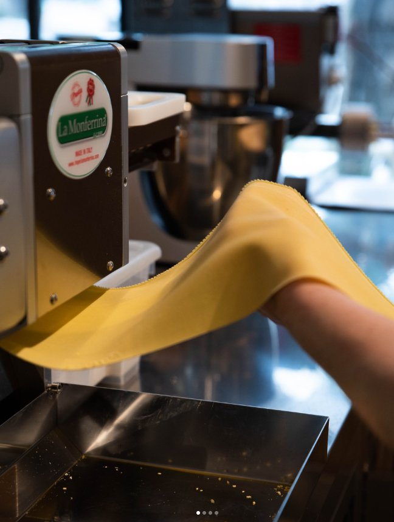

Il laboratorio
La pasta fresca, fatta a mano
Nel locale batte un cuore di farina e uova: il laboratorio di pasta fresca a vista, dove ogni giorno le mani esperte della brigata tirano la sfoglia come si faceva una volta. Vendita diretta e ravioli espressi, dal mattarello al piatto.
- 01
Tortellini & Tortelloni
Chiusi a mano uno a uno, con ripieni della tradizione: ricotta e spinaci, patate alla mugellana, burrata.
- 02
Sfoglia verde agli spinaci
La pasta verde di una volta: spinaci freschi impastati nella sfoglia, per tagliatelle e lasagne dal colore vivo.
- 03
Tagliatelle & pasta lunga
Tirate e tagliate in casa — celebri quelle al tartufo, citate dai clienti come imperdibili. Anche pici senza uovo.
- 04
Ravioli espressi
Preparati al momento e venduti anche da portare a casa: la pasta del Tuttobene sulla tavola di tutti i giorni.


